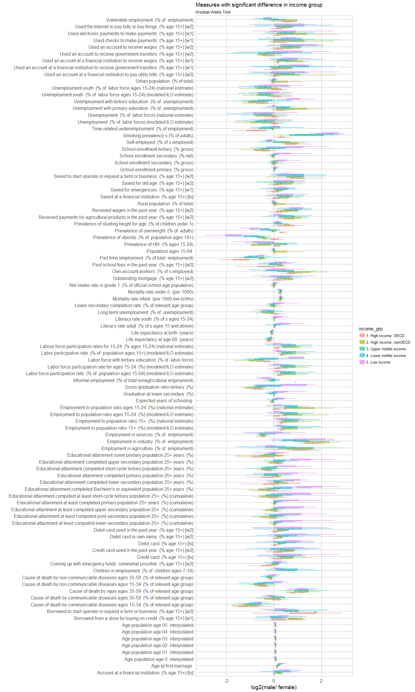

Today, I want to share my analysis of the World Gender Statistics dataset.
Last week I already introduced my Shiny app, where you can explore 160 measurements for 164 countries over 56 years. This week I’ve included a statistical analysis of these countries and measurements and put some finishing touches on the app.
Just in case anybody needed proof that gender bias is not only a problem of “other countries”, my analysis showed very nicely, that the Western world isn’t (yet, I hope) gender neutral in regards to many statistics!
You can also load the app via Github with the shiny package. There, you can also find the source code for the app.
library(shiny)
runGitHub("ShirinG/WGS_app")
The data
The data was downloaded from The World Bank’s Open Data project via Kaggle. The main data table shows
- Country.Name: the name of the country
- Country.Code: the country’s code
- Indicator.Name: the name of the variable that this row represents
- Indicator.Code: a unique id for the variable
- 1960 - 2016: one column EACH for the value of the variable in each year it was available
Unfortunately, the dataset doesn’t include a column that indicated which two female/ male statistics belong together and there is no consistent naming scheme either. Therefore, I chose to focus on those statistics, where the counterparts could be easily extracted: indicator codes that differed only in containing “.FE” or “.MA”. I then split the subsetted dataframe into female and male and produced a third dataset with the ratios between male and female values. To calculate the ratios, I added 0.001 to each data point, so that zero values would not produce NAs.
The finished datasets were saved as “R.Data” files, so that I could easily load them into the Shiny app.
dataset <- read.csv("Data.csv")
dataset_subs <- dataset[grep(".FE|.MA", dataset$Indicator.Code), ]
head(dataset_subs)
dataset_subs$Indicator.Name <- as.character(dataset_subs$Indicator.Name)
dataset_fem <- dataset[grep("female", dataset$Indicator.Name), ]
dataset_fem$Indicator.Name <- gsub("female", "", dataset_fem$Indicator.Name)
dataset_fem$Indicator.Name <- gsub(",", "", dataset_fem$Indicator.Name)
dataset_fem$Indicator.Code <- gsub(".FE", "", dataset_fem$Indicator.Code)
dataset_fem$gender <- "female"
dataset_male <- dataset[-grep("female", dataset$Indicator.Name), ]
dataset_male$Indicator.Name <- gsub("male", "", dataset_male$Indicator.Name)
dataset_male$Indicator.Name <- gsub(",", "", dataset_male$Indicator.Name)
dataset_male$Indicator.Code <- gsub(".FE", "", dataset_male$Indicator.Code)
dataset_male$gender <- "male"
dataset_fem <- dataset_fem[which(dataset_fem$Indicator.Name %in% dataset_male$Indicator.Name), ]
dataset_male <- dataset_male[which(dataset_male$Indicator.Name %in% dataset_fem$Indicator.Name), ]
dataset_fem <- dataset_fem[which(dataset_fem$Country.Code %in% dataset_male$Country.Code), ]
dataset_male <- dataset_male[which(dataset_male$Country.Code %in% dataset_fem$Country.Code), ]
library(dplyr)
dataset_fem <- arrange(dataset_fem, Country.Code)
dataset_male <- arrange(dataset_male, Country.Code)
dataset_fem$Country.Code <- as.character(dataset_fem$Country.Code)
dataset_male$Country.Code <- as.character(dataset_male$Country.Code)
save(dataset_fem, file = "dataset_fem.RData")
save(dataset_male, file = "dataset_male.RData")
length(unique(dataset_fem$Indicator.Name)) == length(unique(dataset_male$Indicator.Name))
for (n in 1:length(unique(dataset_fem$Indicator.Name))) {
code <- unique(dataset_fem$Indicator.Name)[n]
print(code)
fem <- dataset_fem[which(dataset_fem$Indicator.Name == code), ]
male <- dataset_male[which(dataset_male$Indicator.Name == code), ]
for (i in 1:nrow(fem)) {
if (i == 1) {
diff <- (male[i, 5:61] + 0.001) / (fem[i, 5:61] + 0.001)
diff_table <- cbind(male[i, c(1:4)], diff)
} else {
diff <- (male[i, 5:61] + 0.001) / (fem[i, 5:61] + 0.001)
diff_table <- rbind(diff_table,
cbind(male[i, c(1:4)], diff))
}
}
if (n == 1) {
diff_table_bind <- diff_table
} else {
diff_table_bind <- rbind(diff_table_bind, diff_table)
}
}
diff_table_bind$Country.Code <- as.character(diff_table_bind$Country.Code)
measures <- unique(diff_table_bind$Indicator.Name)
save(measures, file = "measures.RData")
years <- gsub("X", "", colnames(diff_table_bind)[-c(1:4)])
years <- years[-length(years)]
save(years, file = "years.RData")
The world map
The map has been downloaded from the Natural Earth Data website. The country borders were reduced by 200 meters with ArcGIS Pro, so that clicking within any country on the map would show the corresponding country’s border as the nearest point. ArcGIS Pro was also used to convert the map to Mercator projection. The changed shapefiles can be downloaded from my Github repository.
library(rgdal)
library(plyr)
library(scales)
wmap_countries <- readOGR(dsn = "shapefiles/changed_borders", layer = "ne_110m_admin_0_countries_smaller_wm")
wmap_countries_df <- fortify(wmap_countries)
wmap_countries@data$id <- rownames(wmap_countries@data)
wmap_countries_df_final <- join(wmap_countries_df, wmap_countries@data, by = "id")
wmap_countries_df_final$adm0_a3 <- as.character(wmap_countries_df_final$adm0_a3)
save(wmap_countries_df_final, file = "wmap_countries_smaller_df_final.RData")
diff_table_bind <- diff_table_bind[which(diff_table_bind$Country.Code %in% wmap_countries_df_final$adm0_a3), ]
save(diff_table_bind, file = "diff_table_bind.RData")
countries <- as.character(unique(diff_table_bind$Country.Name))
save(countries, file = "countries.RData")
library(dplyr)
library(tidyr)
library(ggplot2)
map_theme <- list(theme(panel.grid.minor = element_blank(),
panel.grid.major = element_blank(),
panel.background = element_blank(),
plot.background = element_rect(fill = "white"),
panel.border = element_blank(),
axis.line = element_blank(),
axis.text.x = element_blank(),
axis.text.y = element_blank(),
axis.ticks = element_blank(),
axis.title.x = element_blank(),
axis.title.y = element_blank(),
plot.title = element_text(size = 18)))
my_theme <- function(base_size = 12, base_family = "sans"){
theme_minimal(base_size = base_size, base_family = base_family) +
theme(
axis.text = element_text(size = 12),
axis.title = element_text(size = 14),
panel.grid.major = element_line(color = "grey"),
panel.grid.minor = element_blank(),
panel.background = element_rect(fill = "white"),
strip.background = element_rect(fill = "royalblue", color = "grey", size = 1),
strip.text = element_text(face = "bold", size = 12, color = "white"),
legend.position = "right",
panel.border = element_rect(color = "grey", fill = NA, size = 0.5)
)
}
colfunc <- colorRampPalette(c("yellow", "red"))
Which countries are most biased?
To explore differences between countries and statistics, I prepared a dataset that contains the first and last non-NA value in each time series of the male/ female ratio data (per statistic and country) to calculate whether the change over time was statistically significant. As for the world map plots, I am using the log2 of the ratios, so that ratios bigger and smaller than 1 can be more easily compared.
You can explore which countries have the strongest bias and the biggest change for each statistic in the app under the tab “Latest ratios”.
year_table <- diff_table_bind[which(diff_table_bind$Country.Code %in% wmap_countries_df_final$adm0_a3), ]
# last non-NA value
last_val <- apply(year_table[, grep("^X[0-9]+$", colnames(year_table))], 1, function(x)
na.omit(x)[length(na.omit(x))]
)
last_val_df <- data.frame(unlist(last_val))
last_val_df$year_of_val <- gsub("([0-9]+)(.X)([0-9]+)", "\\3", rownames(last_val_df))
rownames(last_val_df) <- gsub("([0-9]+)(.X)([0-9]+)", "\\1", rownames(last_val_df))
# first non-NA value
first_val <- apply(year_table[, grep("^X[0-9]+$", colnames(year_table))], 1, function(x)
na.omit(x)[1]
)
first_val_df <- data.frame(na.omit(first_val))
year_table_last_val <- cbind(year_table[rownames(last_val_df), 1:3], last_val_df, first_val_df)
year_table_last_val$difference <- (year_table_last_val$unlist.last_val. + 0.001) / (year_table_last_val$na.omit.first_val. + 0.001)
save(year_table_last_val, file = "year_table_last_val.RData")
To identify countries with strongest biases towards either men or women, I calculated the absolute log2 ratio of male/ female values and subsetted the top 10 countries with highest absolute bias. I then counted for how many statistics each country was in the top 10.
for (i in 1:length(measures)) {
m <- measures[i]
subs <- subset(year_table_last_val, Indicator.Name == m)[, c(1, 4)] %>%
mutate(abs_ratio = abs(log2(unlist.last_val.))) %>%
arrange(desc(abs_ratio))
subs$measure <- m
if (i == 1) {
subs_comb <- subs[1:10, ]
} else {
subs_comb <- rbind(subs_comb, subs[1:10, ])
}
}
subs_comb_ordered <- arrange(as.data.frame(table(subs_comb$Country.Name)), desc(Freq))
subs_comb$Country.Name <- factor(subs_comb$Country.Name, levels = subs_comb_ordered$Var1)
ggplot(subs_comb, aes(x = Country.Name)) +
geom_bar(fill = "navyblue", alpha = 0.7) +
coord_flip() +
my_theme() +
labs(title = "Most biased countries",
subtitle = "For how many statistics were the countries in top 10 with highest absolute bias",
x = "")

This plot shows that there are quite a few European/ Western countries with high biases in some statistics. For example:
arrange(subs_comb[which(subs_comb$Country.Name %in% c("Germany", "Netherlands", "United States", "United Kingdom")), - 2],
Country.Name, desc(abs_ratio))
## Country.Name abs_ratio
## 1 Netherlands 1.4678833
## 2 Netherlands 1.4674207
## 3 Netherlands 1.3615747
## 4 Netherlands 1.1248210
## 5 Netherlands 0.9993447
## 6 Netherlands 0.6601651
## 7 Netherlands 0.5512176
## 8 Netherlands 0.1847042
## 9 Germany 8.2336197
## 10 Germany 2.0428320
## 11 Germany 1.1641113
## 12 Germany 1.0957438
## 13 Germany 0.9825083
## 14 Germany 0.7356144
## 15 Germany 0.6274894
## 16 United Kingdom 1.0932072
## 17 United Kingdom 0.8659095
## 18 United Kingdom 0.4347145
## 19 United States 1.3212071
## measure
## 1 Educational attainment completed Doctoral or equivalent population 25+ years (%)
## 2 Educational attainment competed Doctoral or equivalent population 25+ (%) (cumulative)
## 3 Borrowed from a store by buying on credit (% age 15+) [w1]
## 4 Prevalence of stunting height for age (% of children under 5)
## 5 Prevalence of underweight weight for age (% of children under 5)
## 6 Loan in the past year (% age 15+)
## 7 Coming up with emergency funds: somewhat possible (% age 15+) [w2]
## 8 Progression to secondary school (%)
## 9 Prevalence of severe wasting weight for height (% of children under 5)
## 10 Part time employment (% of total employment)
## 11 Time-related underemployment (% of employment)
## 12 Educational attainment completed lower secondary population 25+ years (%)
## 13 Educational attainment completed short-cycle tertiary population 25+ years (%)
## 14 Borrowed from family or friends (% age 15+) [ts]
## 15 Coming up with emergency funds: somewhat possible (% age 15+) [w2]
## 16 Borrowed for health or medical purposes (% age 15+) [w2]
## 17 Average number of hours spent on unpaid domestic work (housework and child care)
## 18 Borrowed any money in the past year (% age 15+) [w2]
## 19 Prevalence of stunting height for age (% of children under 5)
So, let’s take a closer look at the countries: I am calculating the sums of absolute male/ female ratios (again log2) for each country and show it on the map:
for (i in 1:length(countries)) {
c <- countries[i]
subs <- subset(year_table_last_val, Country.Name == c)[, c(2, 3, 4)] %>%
mutate(abs_ratio = abs(log2(unlist.last_val.))) %>%
arrange(desc(abs_ratio))
if (i == 1) {
subs_country <- data.frame(country = c, Country.Code = subs$Country.Code, sum_abs_ratio = sum(subs$abs_ratio))
} else {
subs_country <- rbind(subs_country, data.frame(country = c, Country.Code = subs$Country.Code, sum_abs_ratio = sum(subs$abs_ratio)))
}
}
left_join(subset(wmap_countries_df_final, !continent == "Antarctica"), subs_country, by = c("adm0_a3" = "Country.Code")) %>%
ggplot(aes(long, lat, group = group, fill = sum_abs_ratio)) +
coord_equal() +
map_theme +
geom_polygon() +
geom_path(color = "white", size = 0.5) +
labs(title = "General gender bias per country",
subtitle = "Sum of absolute gender biases for all statistics",
fill = "sum of absolute\nlog2 of male / female") +
scale_fill_gradient2(low = "blue", mid = "blue", high = "red")

Statistical Analysis
You can explore the results for the individual statistics in the app under “Analysis - Plots” and “Analysis - Tests”.
The variables
The world data contains information on each country. I used the following variables to test for statistical significance:
- economic status,
- income group,
- estimated population size,
- estimated gross domestic product (GDP) and
- continent.
Because not all data was normally distributed I explored non-parametric models, as well as an ANOVA. The plots for each statistic can be explored in my app, so here, I am only showing the results for which measures were statistically significant for the different variables.
Wilcoxon Signed-Rank Test
The Wilcoxon Signed-Rank test can be used to test whether observations from repeated measures differ statistically from each other. Here, I am using it to test whether the most recent recorded value is significantly different from the first recorded value. Because I am testing the same data multiple times, I am correcting the p-values and only consider them significant with False Discovery Rate (FDR) below 10% (adjusted p-value < 0.1).
country.inf <- subset(wmap_countries_df_final[, c(17, 25, 26, 31, 32, 42, 43, 47, 48, 62)], !continent == "Antarctica")
country.inf <- country.inf[!duplicated(country.inf), ]
for (i in 1:length(measures)) {
m <- measures[i]
stats_test <- left_join(subset(year_table_last_val, Indicator.Name == m), country.inf, by = c("Country.Code" = "adm0_a3"))
table <- wilcox.test(log2(stats_test$na.omit.first_val.), log2(stats_test$unlist.last_val.), paired = TRUE)
table <- data.frame(Indicator.Name = paste(m),
diff = (median(stats_test$unlist.last_val.) + 0.0001) / (median(stats_test$na.omit.first_val.) + 0.0001),
V = table$statistic,
p.value = table$p.value,
alternative = table$alternative)
if (i == 1) {
table_wilcox <- table
} else {
table_wilcox <- rbind(table_wilcox, table)
}
}
table_wilcox$p.adj <- p.adjust(table_wilcox$p.value, method = "fdr")
table_wilcox$significant <- as.factor(ifelse(table_wilcox$p.adj < 0.1, "significant", "non-significant"))
sig <- subset(table_wilcox, significant == "significant")
left_join(subset(year_table_last_val, Indicator.Name %in% sig$Indicator.Name), country.inf, by = c("Country.Code" = "adm0_a3")) %>%
gather(x, y, unlist.last_val., na.omit.first_val.) %>%
ggplot(aes(x = Indicator.Name, y = log2(y), color = x, fill = x)) +
geom_boxplot(alpha = 0.5, outlier.shape = NA) +
coord_flip() +
my_theme() +
scale_y_continuous(limits = c(-3, 3)) +
labs(
title = "Measures with significant difference over time",
subtitle = "Wilcoxon Signed-Rank Test",
x = "",
y = "log2(male/ female)")

Kruskal-Wallis Test
The Kruskal-Wallis test is a simple non-parametric statistical test. I used it here to test for each variable of interest whether it has a statistically significant effect on the most recent recorded value. Because I am testing the same data multiple times, I am correcting the p-values and only consider them significant with False Discovery Rate (FDR) below 10% (adjusted p-value < 0.1).
for (i in 1:length(measures)) {
m <- measures[i]
stats_test <- left_join(subset(year_table_last_val, Indicator.Name == m), country.inf, by = c("Country.Code" = "adm0_a3"))
stats_test$economy_rank <- as.numeric(as.character(gsub("(^[1-7])(.*)", "\\1", stats_test$economy)))
stats_test$income_grp_rank <- as.numeric(as.character(gsub("(^[1-5])(.*)", "\\1", stats_test$income_grp)))
k_economy_rank <- kruskal.test(log2(unlist.last_val.) ~ economy_rank, data = stats_test)
k_income_rank <- kruskal.test(log2(unlist.last_val.) ~ income_grp_rank, data = stats_test)
k_pop <- kruskal.test(log2(unlist.last_val.) ~ pop_est, data = stats_test)
k_gdp <- kruskal.test(log2(unlist.last_val.) ~ gdp_md_est, data = stats_test)
k_continent <- kruskal.test(log2(unlist.last_val.) ~ continent, data = stats_test)
kruskal_last_val <- data.frame(
group = c("economy (rank)", "income_grp (rank)", "pop_est", "gdp_md_est", "continent"),
p.val = c(k_economy_rank$p.value, k_income_rank$p.value, k_pop$p.value, k_gdp$p.value, k_continent$p.value))
kruskal_last_val$p.adj <- p.adjust(kruskal_last_val$p.val, method = "fdr")
if (i == 1) {
kruskal_last_val_df <- kruskal_last_val[, -2]
colnames(kruskal_last_val_df)[2] <- paste(m)
} else {
pre <- kruskal_last_val[, -2]
colnames(pre)[2] <- paste(m)
kruskal_last_val_df <- left_join(kruskal_last_val_df, pre, by = "group")
}
}
eco <- t(kruskal_last_val_df[1, -1])
eco_sig <- eco[which(eco < 0.1), ]
left_join(subset(year_table_last_val, Indicator.Name %in% names(eco_sig)), country.inf, by = c("Country.Code" = "adm0_a3")) %>%
ggplot(aes(y = log2(unlist.last_val.), x = Indicator.Name, color = economy, fill = economy)) +
coord_flip() +
geom_boxplot(alpha = 0.5, outlier.shape = NA) +
my_theme() +
scale_y_continuous(limits = c(-3, 3)) +
labs(
title = "Measures with significant difference in economy",
subtitle = "Kruskal-Wallis Test",
x = "",
y = "log2(male/ female)")

inc <- t(kruskal_last_val_df[2, -1])
inc_sig <- inc[which(inc < 0.1), ]
left_join(subset(year_table_last_val, Indicator.Name %in% names(inc_sig)), country.inf, by = c("Country.Code" = "adm0_a3")) %>%
ggplot(aes(y = log2(unlist.last_val.), x = Indicator.Name, color = income_grp, fill = income_grp)) +
coord_flip() +
geom_boxplot(alpha = 0.5, outlier.shape = NA) +
my_theme() +
scale_y_continuous(limits = c(-3, 3)) +
labs(
title = "Measures with significant difference in income group",
subtitle = "Kruskal-Wallis Test",
x = "",
y = "log2(male/ female)")

cont <- t(kruskal_last_val_df[5, -1])
cont_sig <- cont[which(cont < 0.1), ]
left_join(subset(year_table_last_val, Indicator.Name %in% names(cont_sig)), country.inf, by = c("Country.Code" = "adm0_a3")) %>%
ggplot(aes(y = log2(unlist.last_val.), x = Indicator.Name, color = continent, fill = continent)) +
coord_flip() +
geom_boxplot(alpha = 0.5, outlier.shape = NA) +
my_theme() +
scale_y_continuous(limits = c(-3, 3)) +
labs(
title = "Measures with significant difference in continent",
subtitle = "Kruskal-Wallis Test",
x = "",
y = "log2(male/ female)")

For population and GDP, there were no statistically significant measures.
sessionInfo()
## R version 3.3.2 (2016-10-31)
## Platform: x86_64-w64-mingw32/x64 (64-bit)
## Running under: Windows 7 x64 (build 7601) Service Pack 1
##
## locale:
## [1] LC_COLLATE=English_United States.1252
## [2] LC_CTYPE=English_United States.1252
## [3] LC_MONETARY=English_United States.1252
## [4] LC_NUMERIC=C
## [5] LC_TIME=English_United States.1252
##
## attached base packages:
## [1] stats graphics grDevices utils datasets methods base
##
## other attached packages:
## [1] ggplot2_2.2.1 tidyr_0.6.1 dplyr_0.5.0
##
## loaded via a namespace (and not attached):
## [1] Rcpp_0.12.9 digest_0.6.12 rprojroot_1.2 assertthat_0.1
## [5] plyr_1.8.4 grid_3.3.2 R6_2.2.0 gtable_0.2.0
## [9] DBI_0.5-1 backports_1.0.5 magrittr_1.5 scales_0.4.1
## [13] evaluate_0.10 stringi_1.1.2 lazyeval_0.2.0 rmarkdown_1.3
## [17] labeling_0.3 tools_3.3.2 stringr_1.1.0 munsell_0.4.3
## [21] yaml_2.1.14 colorspace_1.3-2 htmltools_0.3.5 knitr_1.15.1
## [25] tibble_1.2